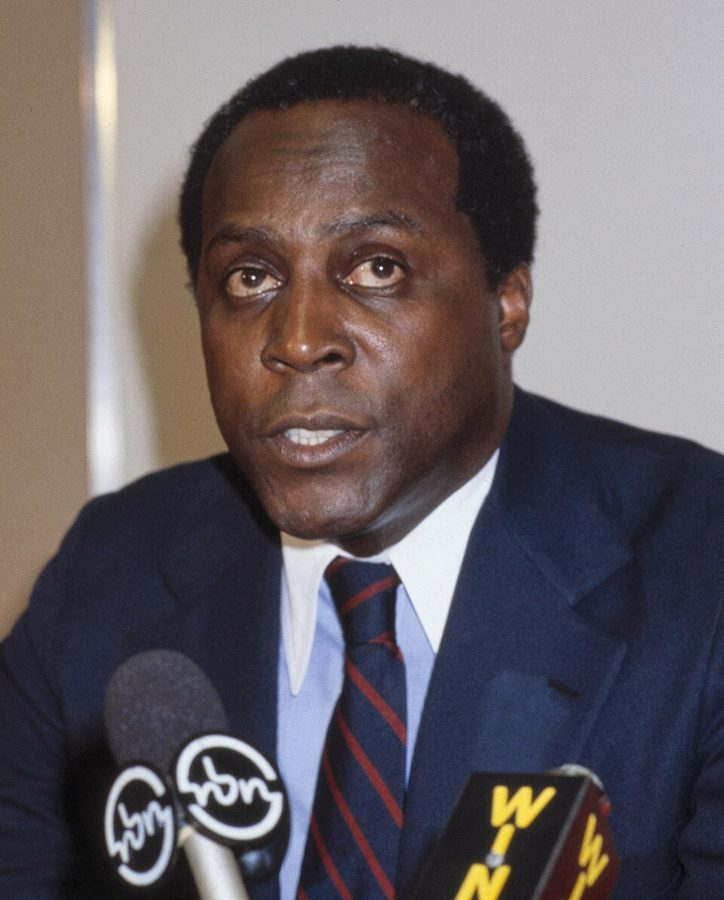
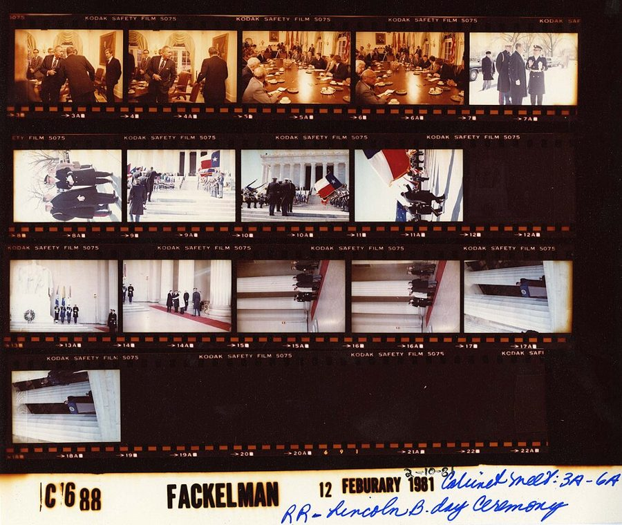
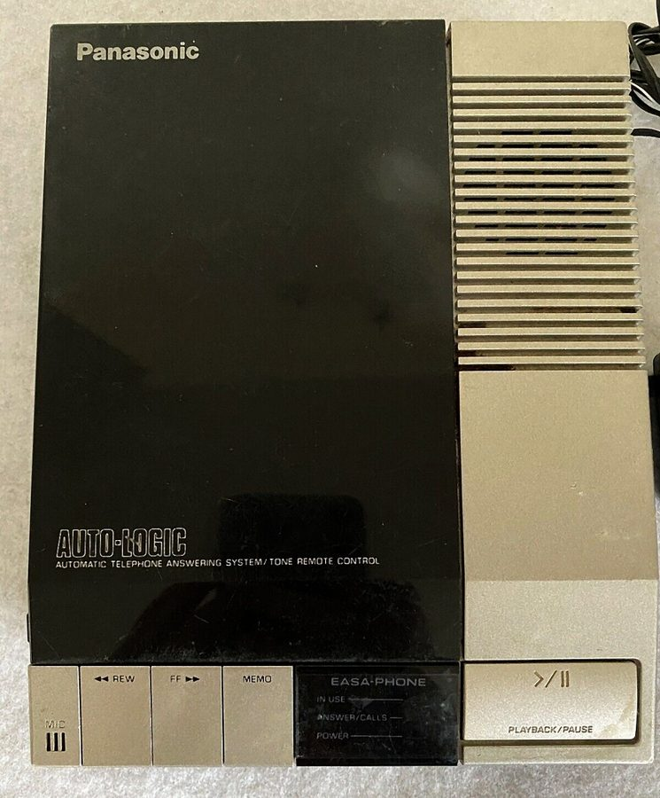

这一页在做什么
五十到五十一岁，在胡佛研究所。接上一页：两篇专栏惹出风波，第二次会议取消，他因为血压在家休养。这一页十六封信：推掉专栏；跟学者和陌生人要证据；新书上电视之后的贺信；给 CBS 的抗议；送别秘书；出国前留给孩子的一封。四封是别人写来的。
读的时候分清两样：媒体把他写成什么，他自己在信里怎么说。
1981 年 3 月 6 月 9 月 12 月 1982 年 3 月
取消第二次会议
新书巡回，上电视
CBS 那条广播
秘书辞职
出国
他写的
Meg Audrey Vernon Paley Maria、Bob
时报 Loury Klitgaard Beverly 孩子们
Ms. ******
写来的
Vernon Jordan
司法部长、Wallis、Monroe
本站示意图。实心圆点是他写出去的信，空心的是别人写来的，都按信上的日期画。1981 年春夏的信多在跟人要证据；秋天新书出来，信变成了贺信和抗议；1982 年的几封安静下来。
这一页的串场文字比信长。新书巡回、Meet the Press 、CBS 那条广播、秘书的去留，都是 2007 年的他在讲，信只是插在中间的物证。
收信人和提到的人
这一页有十二位收信人，另有四封是别人写给他的。公众人物书里给了全名和身份；私人朋友和秘书只有名，本站照书里的叫法。
Meg Meg Greenfield · 《华盛顿邮报》的编辑 上一页她请他写双周专栏，他答应 4 月开始。这一页的第一封信就是推掉这件事，口气客气，没留余地。
To the Editor 《纽约时报》读者来信栏 一封投书。替社会学家 James Coleman 说话，批的是耶鲁教授 James Comer 在该报上的一篇长文。两人他都没写信去，是写给报纸看的。
Audrey 化名 · 60 年代初的女友 隔了多年，她忽然往胡佛研究所寄来一封信，人已在加州。她的信没印，只印了他的回信：一段近况，句句是事实。
Beverly 他在胡佛的秘书 · 书里只有名 先是在串场里替他读 Audrey 的信，后来被记者的电话逼得要哭，1982 年 1 月突然辞职。他回了一封送别的信。接任的是 Agnes，书里也只有名。
Ms. ****** 名字被隐去的陌生人 来信说第三世界的贫穷出于「剥削」，而且有「清楚的证据」。他的回信只有一段，通篇反话。
Professor Loury、Professor Klitgaard Glenn Loury · Robert Klitgaard 串场说两人当时分别在密歇根大学和哈佛任教。两封信是同一个毛病挑两次：一句没给证据的话，被当成不必证明的事实写了出来。称呼用姓加头衔，是同行之间的公事口气。
Vernon Vernon Jordan · Urban League 主席 · 有来有往 报上说两人在吵架。他写信去说明自己从没提过对方，Jordan 回了一段。这一页唯一两个方向都印出来的通信。
Bill（司法部长） William French Smith · 写来的 里根政府的司法部长，看了 Meet the Press 来信道贺。他自己也上过那个节目。
Allen W. Allen Wallis · 罗切斯特大学校长 · 写来的 串场称他是有名望的学者。三封贺信里夸得最满的一封。
Bill（主持人） Bill Monroe · Meet the Press 主持人 · 写来的 节目的主持人自己来信，承认提问的人那天不在状态，还报了观众来信的比例。信里的 Marvin 是提问记者之一 Marvin Kalb。
Mr. Paley William Paley · CBS 书里说他是这家电视网的总裁。CBS 的一位记者在广播里把他归到「相信黑人天生低劣」的一派，他没打官司，写了这封信，后面附了四条出处。
Maria、Bob Fairmont 会议的参加者 · 康奈尔的旧同事 Bob Kilpatrick 1982 年 3 月连着两天各写一封。给 Maria 的信谈那场会如今看来多么遥远，谈手头写马克思的书；给 Bob 的是一段悼念的话。
My dear children 儿子和女儿 · 落款 Daddy 第一次出国之前写下的，万一回不来才让他们拆。他平安回来了，信一直留在档案里。
两个 Bill，三封 Dear Tom。 1981 年 9 月底连着三封来信，称呼都是 Dear Tom ，落款依次是 Bill、Allen、Bill。第一个 Bill 是司法部长，第二个是节目主持人。认人要看信前面那一句串场。
这一页的 Mary 是妻子。 串场里的 Mary and I 、给 Beverly 信里的 my wife 、给 Audrey 信里的 a wonderful woman ，都是 70 年代末出现的那位 Mary，两人 1981 年 1 月结婚。姐姐 Mary Frances 这一页没有出场。给 Maria 的信里提到的 Tony Brown，书里只有名字，没有介绍。
信件地图
一条是一封信。斜体字是那封信正文开头的几个词，照这一版屏幕上的字抄的，在 Kindle 里搜它就能跳过去。编号是黄底的，是别人写来的信；这一页有四封。「留意」只给方向，答案在信里。给 Klitgaard 的信排在 7 月的两封之前，是编书时按内容挪的。
I am in the process of 1981 年 3 月 23 日 · 写给 Meg Greenfield 留意：他说推掉专栏的原因不是时间，那是什么。The degeneration of reasoned discourse on 1981 年 4 月 20 日 · 写给《纽约时报》编辑 留意：他替 Coleman 辩护，有没有说 Coleman 的结论对。Your letter was of course a 1981 年 5 月 13 日 · 写给 Audrey 留意：信前秘书怎么读她的来信；他的回信最后一句说了什么。I would be fascinated to see 1981 年 5 月 27 日 · 写给一位隐去名字的女士 留意：哪些词加了引号；他是在请教吗。You assert as something that 1981 年 6 月 15 日 · 写给 Glenn Loury 留意：他拆开的是哪两个命题；最后一句为什么要补上。What I find somewhat disconcerting are 1981 年 8 月 18 日 · 写给 Robert Klitgaard 留意：最后一句里四个词连成一串，他嫌的是哪几步。You may or may not have 1981 年 7 月 8 日 · 写给 Vernon Jordan 留意：他为了核实一件事，查了哪两样东西。Yes, I have seen those reports 1981 年 7 月 30 日 · Vernon Jordan 写来 留意：Jordan 承认两人有分歧吗；他怎么解释报上的说法。I want to wholeheartedly congratulate you 1981 年 9 月 28 日 · William French Smith 写来 留意：司法部长把提问的记者叫作什么；他自己和这节目什么关系。You gave by far the best 1981 年 9 月 28 日 · W. Allen Wallis 写来 留意：四个形容词之后那个转折；他头一回做了件什么事。I enjoyed the program we did 1981 年 9 月 30 日 · Bill Monroe 写来 留意：主持人怎么评价自己这一边；三个百分比各是哪种观众。One of your reporters is quoted 1981 年 12 月 17 日 · 写给 William Paley 留意：正文只有两句，要求提得多低；信末的四条注是干什么的。I am of course very sorry 1982 年 1 月 28 日 · 写给 Beverly 留意：好话中间夹着的那一句批评；这封信有两段，中间没有称呼。Someone who was at the Fairmont 1982 年 3 月 13 日 · 写给 Maria 留意：一年多前的事他现在怎么看；那位来访者临走说了什么。I was very sorry about the 1982 年 3 月 14 日 · 写给 Bob Kilpatrick 留意：他后悔的是什么；圣诞节和出书为什么被他放在一起说。Although we all know that life 1982 年 4 月 19 日 · 留给孩子们 留意：信是写给什么时候的他们看的；他要他们记住一个什么样的父亲。
背景：作者默认你知道的事
Coleman 和私立学校报告
James Coleman 是芝加哥大学的社会学家，1966 年主持过一份关于教育机会的大型调查，通称 Coleman Report。1981 年春天，他和两位合作者公布一份新研究的初稿，结论是私立中学（多数是天主教学校）的学生成绩好于公立学校背景相近的学生。
当时正在争论要不要用公款补贴私校学费，报告立刻成了靶子。批评者里有人质疑数据和方法，也有人质疑用意。他的投书只谈后一种。
《根》和 Kunta Kinte
Alex Haley 1976 年的畅销书，写自己家族的七代人。第一代是 Kunta Kinte，十八世纪在西非冈比亚被掳，卖到美国为奴。1977 年改编成电视连续剧，收视极高，这个名字在美国无人不知。
给 Loury 的信拿这一头一尾两个人做例子：祖先和后人，谁因为奴隶制过得更差，是两个要分开回答的问题。
Vernon Jordan 和 Urban League

Vernon Jordan 在记者会上，国会图书馆标注约 1973 年。Bernard Gotfryd，公有领域，维基共享资源 National Urban League 成立于 1910 年，是老牌的民权组织，侧重就业和城市生活。Jordan 从 70 年代初主持它，到 1981 年底卸任。上一页的专栏批评的是「传统的黑人领袖」，Urban League 正在其中，所以记者顺手把两人写成了对头。
来往的两封信要说的是：立场不同是真的，吵架是报纸编的。
Meet the Press
1981 年 8 月 3 日，白宫玫瑰园。里根就航空管制员罢工发表声明，左边是司法部长 William French Smith。和这本书无关，是来信的那位 Bill 当年的样子。White House Photo Office，公有领域，维基共享资源
NBC 电视网每周日播出的政治访谈，1947 年开播。当年的做法是一位主持人加几位记者轮流向一位来宾发问，一问一答，来宾没有稿子。上这个节目的多是议员和内阁成员，所以司法部长说自己是过来人。
串场里并提的 Firing Line 是 William F. Buckley 主持的辩论式访谈，Donahue 是白天的观众参与式谈话节目。
节目播出后寄到 NBC 的观众来信
约 60%
约 20%
约 20%
赞成他和他说的话
被他的态度激怒
觉得记者输了
数字出自主持人 Bill Monroe 1981 年 9 月 30 日的来信
本站示意图。这是 Monroe 自己在信里报的数。他加了一句：赞成的比例比平常高得多。第三类观众批评的是节目组自己，主持人照样写进了信里。
媒体写的他，信里的他

白宫摄影师的一页接触印相，1981 年 2 月。第一排是里根在内阁会议室见外部经济顾问。串场说他在这个顾问小组里只开过一次会就辞了，原因是血压。这张图 Odyssey 伴读用过，那边有更细的说明。Mary Anne Fackelman，公有领域，维基共享资源 1981 年他忽然成了新闻人物，报上的他和他自己知道的他对不上。这一页一半的信都在处理这个落差。下图把四处对不上的地方并排放着，右边是他一方的说法。智商数据那件事，Odyssey 第 9 章的伴读讲过。
媒体的说法
他的说法
他被抗议电话逼得 住进了医院
没住院，在家歇了两周； 来电的多数是支持者
他痛斥了 Vernon Jordan， 两人势同水火
文章里、几本书的索引里， 都没有这个名字
他是里根政府的发言人， 新书预示政府的方向
只当过外部顾问，开一次会 就辞了；书里没有政策建议
他像是相信黑人天生 低劣的那一派
四本书、两份报、一本杂志 里都反驳过这种说法
本站示意图。左栏是他转述或引用的媒体说法，本站没有逐条去查当年的报道；右栏出自这一页的信和串场文字。第三行的后半句说的是《纽约时报》对 Ethnic America 的书评。
答录机

用磁带的电话答录机。和书无关，是串场里他给办公室装的那类东西。Pittigrilli，CC BY-SA 4.0，维基共享资源 1981 年，办公室电话还是谁打来就得有人接。答录机（answering machine）接在电话上，没人接就放一段录音，再把对方的话录在磁带里。对他来说它是一道闸：记者的话留在磁带上，回不回由他定。
代价在串场里也写了：他越来越多在家工作，办公室里常常只剩秘书一个人。
Odyssey 里讲过这一段
这一年多在回忆录的第 11 章，上半讲到取消会议和辞掉顾问，下半从新书巡回讲起。回忆录没有印这一页的任何一封信。
取消会议，推掉专栏 Odyssey 第 11 章（上） 回忆录讲的是泄密、响个不停的电话、血压、妻子喂药时说的那句话、姐姐读到「住院」的报道。给 Meg 的推辞只有一句带过。这里是那封信本身，理由和回忆录给人的印象不太一样。
去那一页 → 新书巡回和 Meet the Press Odyssey 第 11 章（下） 书评登在哪、他在节目上的那句回答、时报书评里的那句话，两本书几乎一样。信里多出来的是节目之后的三封来信，其中一封来自被他驳倒的那一边。
去那一页 → CBS、答录机和秘书 Odyssey 第 11 章（下） 回忆录说有两位律师愿意替他告 CBS，这里说一位；记者的名字回忆录拼作 Lem Tucker。回忆录里秘书没有名字，装了答录机以后她很喜欢，故事到此为止。这里她叫 Beverly，几个月后辞了职，还有他回的信和后来的 Agnes。
去那一页 → Audrey 的来信，留给孩子的信 回忆录没写 回忆录对 1982 年只说开始出国旅行。Audrey 重新出现、和 Loury 等人的几次争论、出国前写给儿女的那封信，都只在这本书里。
这一版的错字
只收会让人读不懂、或者在 Kindle 里搜不到的。第一格是屏幕上的字，照抄的；第二格是本站有把握的原字。问号前多出来的撇号全书都有，见「开读之前」，这里不列。
屏幕上的字 应为 在哪 The tailure of the second The failure of the second 给《纽约时报》那封信前面的串场 C'ome up and see me Come up and see me 秘书读完 Audrey 来信说的那句话。句末的引号也印成了短横 the phone-1974-1 was at the phone—1974—I was at 给 Audrey 的信。两个破折号成了短横，I 成了数字 1 a decade later betbre I a decade later before I 给 Audrey 的信后面的串场，讲他多晚才用电脑 I3etbre then, a colleague Before then, a colleague 同一段的下一句 publicize the hook by going publicize the book by going 讲新书巡回的串场。book 认成了 hook，这一段有三处 CBS reporter Lein Tucker CBS reporter Lem Tucker 给 Paley 的信前面的串场。回忆录里拼的是 Lem we had dit7erent conceptions we had different conceptions 给 Beverly 的信前面的串场 her role should he her role should be 同一句的末尾 who intbrmed me of who informed me of 给 Bob 的信前面的串场
两处脚注，一处信里自带的注。 讲换秘书的那段串场里，an unsatisfactory one.' 和 outstanding secretary .' 后面的撇号是脚注号，脚注是图片。第一条说这期间雇过的两位都不行：一位名校毕业，听写时把常见的词拼错；一位把办公室地址告诉了自称老朋友的陌生人，当即被辞。第二条说 Agnes 只有高中学历，拼写却无可挑剔。
给 Paley 的信里，four books,' 、two newspapers,' 、a magazine,; 、speeches.4 是另一回事：那是原信自己的注 1 到 4，四条出处就印在落款下面。
词与短语
按信的顺序排，串场文字里的词条归到它后面那封信的组里。斜体小字是那句话里的几个词，照这一版屏幕上的字抄的（撇号是直的），在 Kindle 里搜它就能跳到那一句。单个的生词长按就能查，这里收的主要是词典帮不上忙的。
1981 年 3 月 · 给 Meg
carry the weight of
… and carrying the weight of those expectations. …
背着（别人的指望）
全信的要害。他说压垮他的不是工作量，是有人等着他交东西。
clear my calendar
… Therefore, I am clearing my calendar. …
把日程全部清空
calendar 是排着约会和截稿日的日程表。
a suitable outlet
… question of a suitable outlet for it. …
合适的发表地方
outlet 这里指登文章的报刊。整句很客气，意思是：以后写了东西，也不一定给你们。
1981 年 4 月 · 给《纽约时报》编辑
ad hominem
… unwelcome news with ad hominem attacks on …
对人不对事的
拉丁文「冲着人」。不驳论点，改去说提出论点的人。这一页的关键词。
turn up
… whoever turned up the facts that they …
翻出来，查到
不是「出现」。后半句的 they 是那些不愿面对事实的人。
reasoned discourse
… The degeneration of reasoned discourse on …
讲道理的讨论
信的第一段只写着 To the Editor: ，这是读者投书的固定称呼。
questions of motive
… are turned into questions of motive. …
动机问题
和 questions of fact 相对。结论对不对被换成了「他安的什么心」。
regale
… Instead, he regales us with other people's …
滔滔不绝地讲给我们听
本义是设宴款待、讲故事逗人开心。用在这里是挖苦：事实一条没有，别人的坏心思倒讲了一大堆。
write off
… write off the poor and limit their …
当成坏账一笔勾销
会计用语，引申为认定没救而放弃。引号里的三段都是 Comer 文章里指别人动机的话，他抄来当证据。
presumptions of moral superiority
… accept presumptions of moral superiority as a …
自以为道德上高人一等
presumption 是没经证明就先认定的东西。
1981 年 5 月 · 给 Audrey
too subtle for me
… Women are too subtle for me, Beverly. …
太绕，我看不懂
subtle 是含蓄到让人抓不住。他把信递给秘书，请她翻译。
Come up and see me sometime
… up and see me sometime …
有空上来看看我
好莱坞影星 Mae West 在 1930 年代的电影里的名台词，出了名的挑逗话。Beverly 是在打趣。屏幕上 Come 印错了，见错字表。
an understatement
… over the years is an understatement. …
说得太轻了
十六年没见面，说「发生了不少事」当然是往轻里说。
chess rating
… has a higher chess rating than I …
国际象棋等级分
儿子就是 Odyssey 第 7 章里三岁多还不开口的那个孩子。括号里的 which I can't 说的是电脑。
at a low ebb
… was at one of my lowest ebbs, but …
在低谷
ebb 是退潮。1974 年是他离婚前后，Odyssey 第 10 章讲过。
custody battle
… to start a custody battle for my …
争抚养权的官司
at the eleventh hour
… out of it at the eleventh hour. …
在最后关头
出自《马太福音》里葡萄园工人的比喻。前面的 talked me out of it 是劝我打消了念头。
the last of the Luddites
… the last of the Luddites …
最后一个卢德分子
Luddites 是十九世纪初英国砸纺织机的工人，后来泛指抵制新技术的人。句式套的是小说名 The Last of the Mohicans 。
1981 年 5 月到 8 月 · 给 Ms. ******、Loury、Klitgaard
unsubstantiated assertions
… academia are unsubstantiated assertions that become …
没有证据撑着的断言
by sheer repetition
… by sheer repetition. My concern over …
光靠说的遍数多
sheer 是「纯粹、全凭」，不是陡峭。加了引号的 well-known facts 是反话。
I would be fascinated to see
… I would be fascinated to see the …
我倒真想见识见识
反话。他认定对方拿不出来。
meaning what?
… (meaning what?) both exists and is …
这词到底指什么
括号里插的一句。对方的词还没定义，就已经拿来解释世界了。
reams of
… reading reams of Marxist rhetoric and …
成堆的（文字）
ream 是一令纸，五百张。
needle in the haystack
… factual needle in the verbal haystack. …
草堆里的针
成语里各塞进一个形容词：话堆成的草垛，事实做的针。
save an old man a lot of work
… can save an old man a lot …
省我这个老头子不少事
他这年五十岁。自称老头，是装出来的谦卑。
by virtue of
… worse off today by virtue of the …
由于
和美德无关。这是引号里 Loury 的原话，文绉绉的学术腔。
Kunta Kinte
… obvious that Kunta Kinte was worse off …
《根》里被掳为奴的祖先
见背景。Alex Haley 是他的后人，也是书的作者。
royalties
… before receiving the royalties from Roots. …
版税
熟词生义，和王室无关。这半句是冷幽默：就算不算版税，Haley 也比祖先村里的人过得好。
it by no means follows that
… it by no means follows that Alex …
绝对推不出
follow 是逻辑上「由此得出」。
on different grounds
… respected on entirely different grounds. …
基于另外的理由
grounds 是理由。这句不能漏读：他说那份自由本来就该受尊重，只是理由不在后人的贫富上。
offhand
… are your offhand assertions-without a speck …
随口的，不假思索的
短横应是破折号。a speck of evidence 是一星半点证据。
glide from … to
… not enough to glide from differences to …
一路滑过去
后面连着四个词：differences（不同）、inequalities（不等）、inequities（不公）、solutions（对策）。他的意思是每一步都得论证，不能滑。
non-sequiturs
… this series of non-sequiturs has become. …
推不出来的推论
拉丁文「并不由此得出」，逻辑学的行话。
1981 年 7 月 · 和 Vernon Jordan 的来往
make a story
… facts whatever to make a story. …
凑成一条新闻
story 是新闻稿。
in question
… through my articles in question for any …
所说的那几篇
放在名词后面，指「正在谈的那个」。不是「有疑问的」。
indexes
… through the indexes of my books …
书后的索引
连自己书的索引都查了一遍。是玩笑，也是他的习惯：先核对再开口。
pick up
… the same theme picked up by other …
接过去照着说
新闻行话：别家媒体跟进、转述。
pay them no mind
… the papers-pay them no mind. It …
别理它
口语，带点南方味。回忆录里那位国会议员说的也是这句。
need be no bar to
… differences need be no bar to friendship …
不必妨碍
bar 是障碍；need 在这里是情态动词，所以后面是 be。这句承认了分歧是真的。
loves a good fight
… the press loves a good fight so …
就爱看人打架
1981 年 9 月 · Meet the Press 之后的三封来信
tenuous
… only the most tenuous connection as a …
极单薄的（一点关系）
本义是细得一扯就断。
hype and spin
… Such media hype and spin probably increased …
炒作和带风向
spin 是把一件事往某个方向去解读。他承认这帮书多卖了几本。
I am not now, nor have I ever been
… I am not now, nor have I …
我现在不是，过去也从来不是
套的是 1950 年代国会调查共产党时的那句问话：你现在是或曾经是共产党员吗。美国观众一听就懂，他把「里根政府发言人」当成了一项指控来否认。
a veteran of
… As a veteran of that program, I …
上过……的过来人
不是老兵。司法部长自己被那几位记者问过。
turn the tables on
… a guest turn the tables on the …
反过来占了上风
来自棋盘游戏：把棋盘掉个头。
grand inquisitors
… on the grand inquisitors so skillfully! …
大审判官
宗教裁判所的首席法官。拿来叫提问的记者，是玩笑话。
devastating, but in a nice way
… and devastating, but in a nice way. …
杀伤力十足，又不失风度
devastating 说辩论时是把对方驳得体无完肤，是夸奖。
send off for
… I have sent off for a transcript. …
写信去索取
transcript 是节目的文字记录，当年要向电视台邮购。
flat-footed
… including myself, seemed a little flat-footed.... …
反应慢半拍
不是说扁平足。脚跟着地站着，来不及动。主持人在说自己这一边。
electricity
… it had plenty of electricity. Our …
火花，看头
紧接着的 Our letters 是观众寄给节目组的信。
outmatched
… all of us in general, were outmatched …
不是对手
主持人转述观众的话，把自己也算了进去。
1981 年 12 月 · 给 Mr. Paley
what a crock
… knew what a crock Tucker's statement was, …
纯属胡扯
crock 本是瓦罐，这里是一句粗话的省略说法。串场文字里的口语，信里他不这么写。
iffy
… knowing how iffy the law of libel …
没准儿，靠不住
if 加 y。libel 是见诸文字的诽谤，slander 是口头的；广播算哪种，本身就有争议。
is quoted as having
… reporters is quoted as having represented me …
据引述，曾经……
他没亲耳听到那次广播，所以措辞留了一步。represent 这里是「把……说成」。
some minimal attempt
… to expect some minimal attempt to check …
起码试着（查一下）
往轻里说。要求提得越低，对方越难看：连这一点都没做。
p. 57 ff
… March 27, 1977, p. 57 ff; Los …
第 57 页起
ff 是 and the following pages。落款下一行的 Senior Fellow 是他在胡佛的职衔：公事信，把身份亮出来。
1982 年 1 月 · 给 Beverly
take a lot on oneself
… she took a lot on herself that …
把很多事揽到自己身上
这半句在信里换了个更直的说法，见下面 shape my decisions。
if I may consider myself a friend
… if I may consider myself a friend, …
如果我算得上朋友的话
从上司的身份退一步再开口。后面那句真话才说得出来。
shape my decisions
… trying to shape my decisions instead of …
左右我的决定
全信唯一的批评。他要的是把信息拿给他，由他自己判断。
air
… lunch and air our different conceptions of …
摊开来谈
熟词生义，作动词：把意见、不满公开说出来。这是妻子出的主意。
transient and marginal
… most transient and marginal relationship to you. …
一面之缘、无足轻重的
说的是电话里对她无礼的记者。
my loss, your gain
… my loss will prove to be your …
我的损失，你的收获
化用成语 one man's loss is another man's gain 。告别时的体面话。
do without
… I simply did without a secretary entirely, …
干脆不用
句末那个多出来的撇号是脚注号，见错字表下面的说明。
handle oneself
… on how well she handled herself and …
应对得体
she is an eleven
… to ten, she is an eleven. …
十分制，她得十一分
这是写进人事部门年度考评里的话。
1982 年 3 月 · 给 Maria 和 Bob
the history of ideas
… returned to the history of ideas, doing …
思想史
他的本行：Say’s Law、古典经济学、马克思。Odyssey 第 6 章起一直在讲。
a damn fool even to consider
… was a damn fool even to consider …
连想都不该想的傻瓜
转述 Tony Brown 当年的话。后半句认了账。
signs of the times
… of the signs of the times was …
时势的征兆
出自《马太福音》。
parting words
… Her parting words to me were an …
临走时说的话
当初劝他入阁的人，一年后为这件事向他道歉。
my field
… be returning to my field after writing …
我的本行
写种族在他看来是出了本行。
loud-and-wrong
… so ignorant, so loud-and-wrong, that I felt …
嗓门大，而且是错的
口语里现成的说法，他用连字符拼成了一个形容词。
embarrassed for
… I felt embarrassed for people who did …
替（别人）害臊
for 是「替」。后半句是整封信最刻薄的地方：他们自己不知道该害臊。
bound to be a disappointment
… twenty years is bound to be a …
注定叫人失望
他转述 Milton Friedman 的话：想了二十年的事，真做了准不如意。
want it over with
… I just want it over with-and don't …
只想赶紧了结
短横应是破折号。
mellow
… Could I be mellowing'? …
脾气变温和
本来说水果熟透、酒变醇。自嘲的一问。问号前的撇号是这一版的通病。
the passing of
… sorry about the passing of Jack Wolfowitz-and …
去世
委婉说法。书里只说这位是康奈尔时的同事。
provide settings
… that these provide settings in which you …
提供一个场合
these 指圣诞节和新书出版：寄贺卡、寄赠书的时候，对朋友说句重话不显得突兀。
1982 年 4 月 · 留给孩子们
in order
… everything is left in order before I …
安排妥当
英语里 put one's affairs in order 常指安排后事。
only human
… close to us. That is only human. …
人之常情
Many a time
… Many a time I have seen you …
多少次
many a 后面跟单数，书面、略旧的说法。
smiling upturned faces
… by your smiling upturned faces was all …
仰着的笑脸
孩子小，看大人要仰头。
in triumph
… Caesar entering Rome in triumph could not …
行凯旋式
triumph 在古罗马是专名：得胜的统帅率军入城的仪式。
built in
… has many frictions built in, that neither …
天生自带的
和程序员说的 built-in 是一个意思：这层关系出厂就带着摩擦，谁也卸不掉。
weeds and tangles
… by the weeds and tangles of everyday …
杂草和乱藤
比喻日常的管教和怄气，盖住了底下的东西。
run its course
… Grief must run its course, and then …
走完它自己的过程
常用来说病。
My grief will be over
… My grief will be over when you …
我的悲伤那时已经结束
读到这封信的前提是他已经不在。见下面「值得停下来的句子」。
值得停下来的句子
Questions of fact are turned into questions of motive.— 1981 年 4 月 20 日给《纽约时报》编辑的信。本站译：事实问题被换成了动机问题。
被动句，没说是谁换的，因为他认为到处都在换。这一页里他对四个人用了同一把尺子：Comer 的文章、那位女士的「清楚的证据」、Loury 的 should be clear 、Klitgaard 的 myths and stereotypes ，他问的都是事实在哪。
反过来，CBS 那条广播对他做的也是这件事：不谈他的数据，猜他属于哪一派。本站的看法：这句话是 01a 那一页里他对 Cy 说的那条规矩的二十年后版本，只是这回对面换成了报纸和电视。
My grief will be over when you read this but I have shed my tears in writing it.— 1982 年 4 月 19 日留给孩子们的信。本站译：你们读到这封信时，我的悲伤已经过去了；眼泪我在写它的时候已经流过。
两个半句，时态不同。will be over 是站在写信这一刻看将来：你们拆信的时候我已经不在，所以不会再难过。have shed 是现在完成时：此刻，写着写着已经哭过了。
全书里他很少这样说话。写这封信的人，同一年在别的信里还在跟人逐条对证据。停在这里，是因为它让前面那些硬邦邦的信有了另一面。
检查一下理解
先在心里答，再点开。答错的那题，回书里把那封信再读一遍。
1. 他告诉 Meg Greenfield 不写专栏了。信里说的原因是没有时间吗？ 不是。信里明说问题不大在时间，在于有人等着他做事，他得背着这份指望。所以他的办法是把日程整个清空，而不是少写几篇。
2. 给那位隐去名字的女士的信里，他说很想看看她的「清楚的证据」，还请她「省老头子一些事」。这是在请教吗？ 不是，通篇是反话。他说自己找了多年，在成堆的文字里没找到一条事实。请对方寄来，意思是认定对方拿不出。「剥削」一词后面括号里的那句追问，是说这个词连定义都还没有。
3. 给 Loury 的信，是在说奴隶制对黑人没有害处吗？ 不是。他分开了两件事：被掳的那位祖先因奴隶制受害，这很明显；两百年后的后人是否因此过得更差，推不出来。他还补了一句，祖先的自由本来就该受尊重，理由不在后人的处境上。
4. 1981 年 9 月底有两封落款 Bill 的来信，是同一个人写的吗？ 不是。9 月 28 日那封是司法部长 William French Smith，祝贺他在节目上的表现。9 月 30 日那封是节目主持人 Bill Monroe，承认提问的一方那天不够好，并报了观众来信的比例。
5. 从来往的两封信看，他和 Vernon Jordan 之间有没有分歧？有没有争吵？ 有分歧，没有争吵。他说自己的文章和书里根本没提过 Jordan。Jordan 回信说政治上、观念上的不同不必妨碍友谊和尊重，报界喜欢看打架，没有就造一场。
6. 留给孩子们的那封信，孩子们当时读到了吗？信是写给什么情形下的他们的？ 没有。那是他第一次出国前写的，只有他回不来才会被拆开。他平安回来，信一直留在档案里，二十五年后才印在这本书里。所以信里说话的是一个假定自己已经去世的父亲。